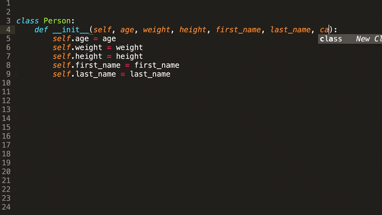
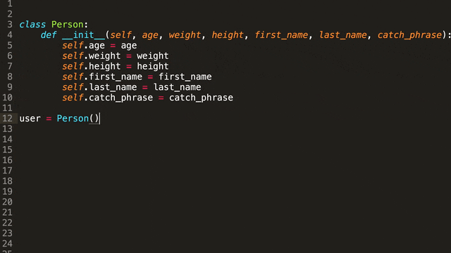
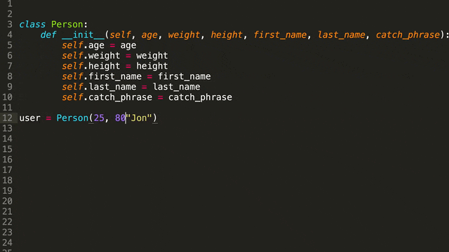
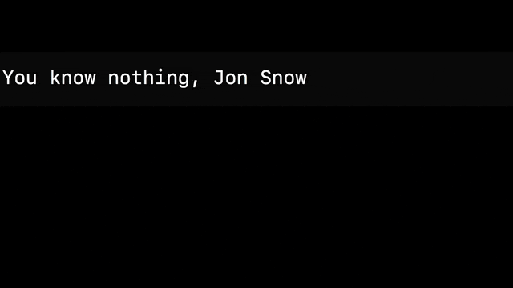
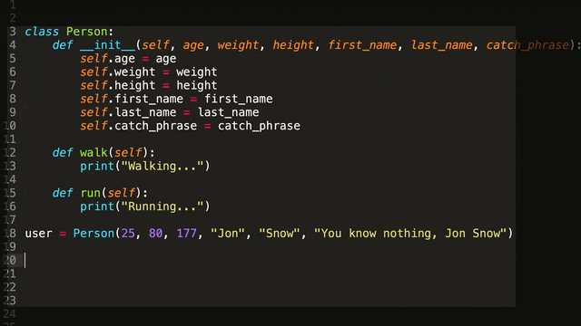
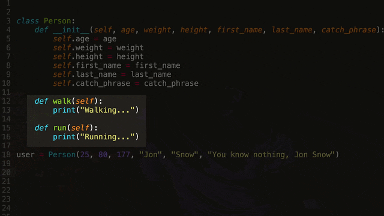

Alright, so I'm gonna try something new
Summary
Alright, so I'm gonna try something new. I'm gonna try to be really fast, but still tell you everything that I think you need to know. So a class in programming can be described as an object in the real world and.
Steps
1. It's just type in print and in parentheses user dot catchphrase and that will then print whatever.
2. Well, it would have volume how much could it contain it would probably have what type of bottle it is is it wine soda milk?
Timeline
0:00:00 - 0:00:06
explanation
Alright, so I'm gonna try something new. I'm gonna try to be really fast, but still tell you everything that I think you need to know.
0:00:06 - 0:00:11
explanation
So a class in programming can be described as an object in the real world and.
0:00:12 - 0:00:16
statement
Classes in programming are also often referred to as objects and.
0:00:16 - 0:00:21
explanation
So object oriented programming just means utilizing classes in your code.
0:00:21 - 0:00:26
explanation
So if you want to write good code, then you really need to know how to use classes.
0:00:26 - 0:00:28
explanation
So let me break this down for you.
0:00:28 - 0:00:32
question
Here you see a class written in Python and that looks simple enough, right?
0:00:32 - 0:00:35
statement
But at this point it doesn't really do anything for us.
0:00:35 - 0:00:43
explanation
So let's make this a little bit more useful and let's add some attributes to this class and that just means let's add some stuff.
0:00:43 - 0:00:46
statement
That a person would have metrics and values.
0:00:47 - 0:00:52
explanation
Anything that describes a person really so what could this be what features does a person have?
0:00:52 - 0:00:54
statement
Well, they have an age right and.
0:00:55 - 0:00:57
statement
A weight a height and.
0:00:58 - 0:01:01
statement
Lastly, they have a first name and a last name.
0:01:01 - 0:01:07
explanation
So now we've added attributes to our person class and we can now start using this class in other parts of our code.

0:01:08 - 0:01:11
question
We can create what is called an instance of our person class.
0:01:11 - 0:01:16
transition
We can make a new person that will be our user let's say and here comes a really cool part.
0:01:16 - 0:01:21
explanation
So now we're able to access the attributes of person and set them for our user.

0:01:22 - 0:01:25
explanation
So for instance, what would the first name of our user person be?
0:01:25 - 0:01:30
explanation
Well, let's name them John. How old would John be? Well, I'm 25 so I'm just gonna go with 25.
0:01:31 - 0:01:38
transition
What were the weight of John be? I'm gonna go with 80 for now and this could of course represent any metric you want.

0:01:38 - 0:01:43
explanation
So you could represent grams pounds or kilos doesn't really matter.
0:01:43 - 0:01:49
explanation
So now then when we use our user we will be able to access all the different attributes of our person class and.
0:01:49 - 0:01:53
statement
First name last name age height weight, etc and.
0:01:54 - 0:01:57
statement
Whatever else we might add to the person class in the future.
0:01:57 - 0:02:03
explanation
So for instance to test this we could try printing the user's catchphrase to the terminal and how we do that.
0:02:03 - 0:02:09
action
It's just type in print and in parentheses user dot catchphrase and that will then print whatever.
0:02:09 - 0:02:12
statement
We have set the catchphrase for our user to be.
0:02:12 - 0:02:18
statement
We can also add methods in our class and access them the same way that we would with attributes and.

0:02:18 - 0:02:21
transition
The class might then end up looking something this.

0:02:21 - 0:02:24
explanation
So what we can do now is we can get our user to walk or run.

0:02:25 - 0:02:31
explanation
So user dot walk would then print walking to the terminal you can create a class for anything that you can imagine.
0:02:31 - 0:02:36
explanation
So for instance, let's say a bottle of water what attributes would it have?
0:02:36 - 0:02:44
action
Well, it would have volume how much could it contain it would probably have what type of bottle it is is it wine soda milk?
0:02:45 - 0:02:52
explanation
Whatever and what methods would it have so what can you do with a bottle? Well, you can pour it you can fill it.
0:02:52 - 0:02:58
statement
You can probably recycle it creating classes is something that may take some time to get used to it.
0:02:58 - 0:03:05
statement
Took me some time to get used to it and I would recommend just practicing by creating classes for things that you see and have around you and.
0:03:05 - 0:03:09
statement
This will teach you how to abstract real-world things and represent them in code.
0:03:09 - 0:03:13
statement
Which is pretty much what programming is all about and if you learn to do this.
0:03:13 - 0:03:17
transition
Well, then you pretty much won half the battle when it comes to learning to code.
0:03:17 - 0:03:18
statement
Okay, I hope I did that well.
0:03:18 - 0:03:24
statement
I tried to be really fast and I hope I explained it well and that you got something out of this and.
Metadata
Video ID: 4129d992-f77d-4a50-bd2b-9ea106af9099
Language: en
Total Segments: 42
Total Words: 670